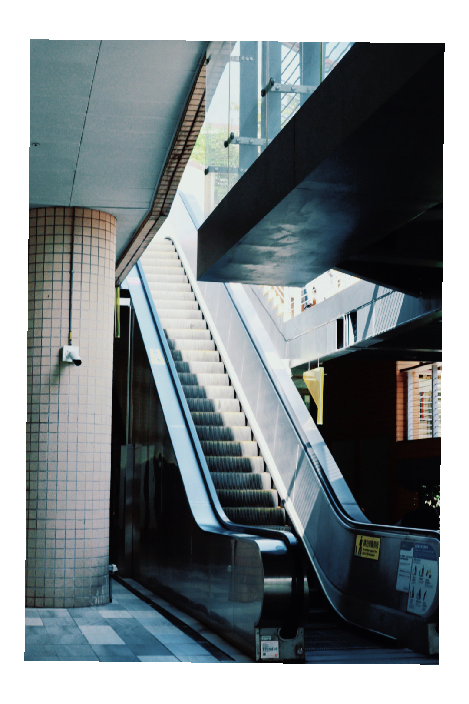
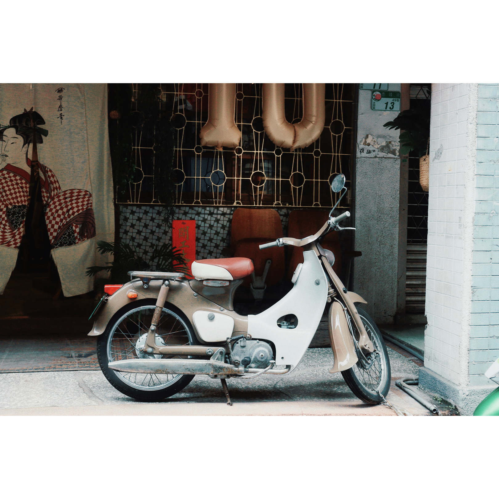
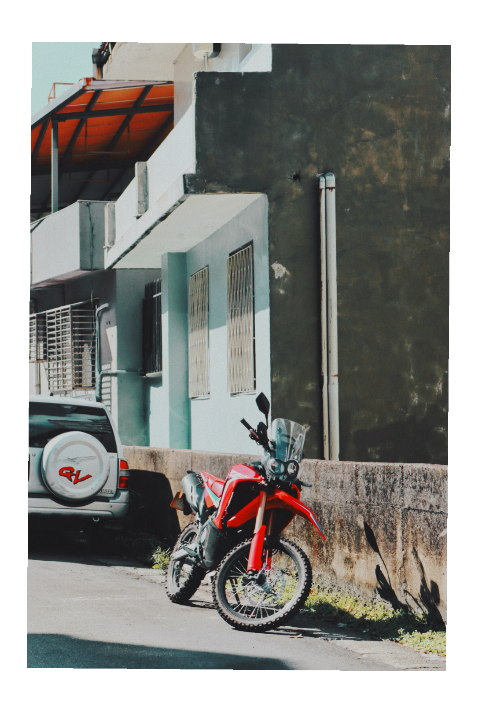
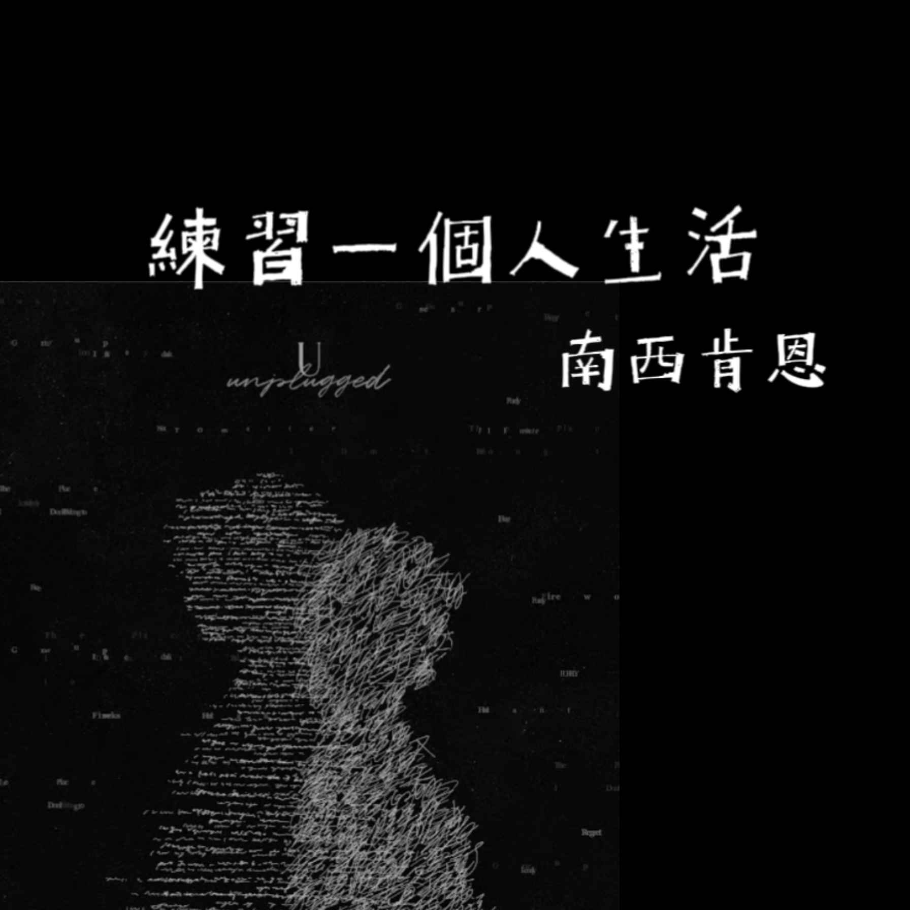

<!DOCTYPE html>
<html lang="en">
    <head>
        <meta charset="utf-8" />
        <meta name="viewport" content="width=device-width, initial-scale=1, shrink-to-fit=no" />
        <meta name="description" content="李欣蓉的作品介紹網頁" />
        <meta name="author" content="李欣蓉" />
        <title>李欣蓉的作品介紹</title><body>
          <div class="wrap">
              <div class="header"></div>
              <div class="content"></div>
          </div>
      </body>
      .wrap{
          margin:0 auto;
      }
        <link rel="icon" type="image/x-icon" href="assets/img/favicon.ico" />
        <!-- Font Awesome icons (free version)-->
        <script src="https://use.fontawesome.com/releases/v6.1.0/js/all.js" crossorigin="anonymous"></script>
        <!-- Google fonts-->
        <link rel="preconnect" href="https://fonts.googleapis.com">
        <link rel="preconnect" href="https://fonts.gstatic.com" crossorigin>
        <link href="https://fonts.googleapis.com/css2?family=Noto+Sans+TC&family=Noto+Serif+TC&display=swap" rel="stylesheet">
        <link href="https://fonts.googleapis.com/css?family=Saira+Extra+Condensed:500,700" rel="stylesheet" type="text/css" />
        <link href="https://fonts.googleapis.com/css?family=Muli:400,400i,800,800i" rel="stylesheet" type="text/css" />
        <!-- Core theme CSS (includes Bootstrap)-->
        <link href="css/styles.css" rel="stylesheet" />
        <link href="css/my_style.css" rel="stylesheet">
  
        </style>
  
    </head>
    <body id="page-top">
        <div class="'container">
            <nav class="navbar navbar-expand-md navbar-dark bg-primary fixed-top">
                <div class="container-fluid">
                  <a class="navbar-brand" href="index.html">李欣蓉的個人網頁</a>
                  <button class="navbar-toggler" type="button" data-bs-toggle="collapse" data-bs-target="#navbarSupportedContent" aria-controls="navbarSupportedContent" aria-expanded="false" aria-label="Toggle navigation">
                    <span class="navbar-toggler-icon"></span>
                  </button>
                  <div class="collapse navbar-collapse" id="navbarSupportedContent">
                    <ul class="navbar-nav me-auto mb-2 mb-lg-0">
                      <li class="nav-item">
                        <a class="nav-link active" aria-current="page" href="#">Home</a>
                      </li>
                      <li class="nav-item">
                        <a class="nav-link" href="#">Link</a>
                      </li>
                      <li class="nav-item dropdown">
                        <a class="nav-link dropdown-toggle" href="#" id="navbarDropdown" role="button" data-bs-toggle="dropdown" aria-expanded="false">
                          各種作品
                        </a>
                        <ul class="dropdown-menu" aria-labelledby="navbarDropdown">
                          <li><a class="dropdown-item" href="https://a111070037.wixsite.com/olivia">攝影集</a></li>
                          <li><a class="dropdown-item" href="https://a111070037.wixsite.com/olivia2">歌單討論</a></li>
                          <li><a class="dropdown-item" href="ttps://a111070037.wixsite.com/olivia">寫作</a></li>
                          <li><hr class="dropdown-divider"></li>
                          <li><a class="dropdown-item" href="https://a111070037.wixsite.com/olivia2">生啀使</a></li>
                        </ul>
                      </li>
                      <li class="nav-item">
                        <a class="nav-link disabled" href="#" tabindex="-1" aria-disabled="true">Disabled</a>
                      </li>
                    </ul>
                    <form class="d-flex">
                      <input class="form-control me-2" type="search" placeholder="查詢資料" aria-label="Search">
                      <button class="btn btn-outline-success" type="submit">查詢</button>
                    </form>
                  </div>
                </div>
            </nav>
            <h1 class="mt-5">李欣蓉的作品介紹</h1>
        </div>
        <!-- Bootstrap core JS-->
        <script src="https://cdn.jsdelivr.net/npm/bootstrap@5.1.3/dist/js/bootstrap.bundle.min.js"></script>
        <!-- Core theme JS-->
        <script src="js/scripts.js"></script>    
    </body>
</html>
<html lang="zh-TW" data-bs-theme="light" class="translated-ltr"><head><script src="/docs/5.3/assets/js/color-modes.js"></script>

  <meta charset="utf-8">
  <meta name="viewport" content="width=device-width, initial-scale=1">
  <meta name="description" content="">
  <meta name="author" content="Mark Otto, Jacob Thornton, and Bootstrap contributors">
  <meta name="generator" content="Hugo 0.112.5">
  <title>相冊示例 · Bootstrap v5.3</title>

  <link rel="canonical" href="https://getbootstrap.com/docs/5.3/examples/album/">

  

  

<link href="/docs/5.3/dist/css/bootstrap.min.css" rel="stylesheet" integrity="sha384-9ndCyUaIbzAi2FUVXJi0CjmCapSmO7SnpJef0486qhLnuZ2cdeRhO02iuK6FUUVM" crossorigin="anonymous">

  <!-- Favicons -->
<link rel="apple-touch-icon" href="/docs/5.3/assets/img/favicons/apple-touch-icon.png" sizes="180x180">
<link rel="icon" href="/docs/5.3/assets/img/favicons/favicon-32x32.png" sizes="32x32" type="image/png">
<link rel="icon" href="/docs/5.3/assets/img/favicons/favicon-16x16.png" sizes="16x16" type="image/png">
<link rel="manifest" href="/docs/5.3/assets/img/favicons/manifest.json">
<link rel="mask-icon" href="/docs/5.3/assets/img/favicons/safari-pinned-tab.svg" color="#712cf9">
<link rel="icon" href="/docs/5.3/assets/img/favicons/favicon.ico">
<meta name="theme-color" content="#712cf9">


  <style>
    .bd-placeholder-img {
      font-size: 1.125rem;
      text-anchor: middle;
      -webkit-user-select: none;
      -moz-user-select: none;
      user-select: none;
    }

    @media (min-width: 500px) {
      .bd-placeholder-img-lg {
        font-size: 2rem;
      }
    }

    .b-example-divider {
      width: 100%;
      height: 3rem;
      background-color: rgba(0, 0, 0, .1);
      border: solid rgba(0, 0, 0, .15);
      border-width: 1px 0;
      box-shadow: inset 0 .5em 1.5em rgba(0, 0, 0, .1), inset 0 .125em .5em rgba(0, 0, 0, .15);
    }

    .b-example-vr {
      flex-shrink: 0;
      width: 1.5rem;
      height: 100vh;
    }

    .bi {
      vertical-align: -.125em;
      fill: currentColor;
    }

    .nav-scroller {
      position: relative;
      z-index: 2;
      height: 2.75rem;
      overflow-y: hidden;
    }

    .nav-scroller .nav {
      display: flex;
      flex-wrap: nowrap;
      padding-bottom: 1rem;
      margin-top: -1px;
      overflow-x: auto;
      text-align: center;
      white-space: nowrap;
      -webkit-overflow-scrolling: touch;
    }

    .btn-bd-primary {
      --bd-violet-bg: #712cf9;
      --bd-violet-rgb: 112.520718, 44.062154, 249.437846;

      --bs-btn-font-weight: 600;
      --bs-btn-color: var(--bs-white);
      --bs-btn-bg: var(--bd-violet-bg);
      --bs-btn-border-color: var(--bd-violet-bg);
      --bs-btn-hover-color: var(--bs-white);
      --bs-btn-hover-bg: #6528e0;
      --bs-btn-hover-border-color: #6528e0;
      --bs-btn-focus-shadow-rgb: var(--bd-violet-rgb);
      --bs-btn-active-color: var(--bs-btn-hover-color);
      --bs-btn-active-bg: #5a23c8;
      --bs-btn-active-border-color: #5a23c8;
    }
    .bd-mode-toggle {
      z-index: 1500;
    }
  </style>

  
<link type="text/css" rel="stylesheet" charset="UTF-8" href="https://www.gstatic.com/_/translate_http/_/ss/k=translate_http.tr.69JJaQ5G5xA.L.W.O/d=0/rs=AN8SPfpC36MIoWPngdVwZ4RUzeJYZaC7rg/m=el_main_css"></head>
<body>
  <svg xmlns="http://www.w3.org/2000/svg" style="display: none;">
    <symbol id="check2" viewBox="0 0 16 16">
      <path d="M13.854 3.646a.5.5 0 0 1 0 .708l-7 7a.5.5 0 0 1-.708 0l-3.5-3.5a.5.5 0 1 1 .708-.708L6.5 10.293l6.646-6.647a.5.5 0 0 1 .708 0z"></path>
    </symbol>
    <symbol id="circle-half" viewBox="0 0 16 16">
      <path d="M8 15A7 7 0 1 0 8 1v14zm0 1A8 8 0 1 1 8 0a8 8 0 0 1 0 16z"></path>
    </symbol>
    <symbol id="moon-stars-fill" viewBox="0 0 16 16">
      <path d="M6 .278a.768.768 0 0 1 .08.858 7.208 7.208 0 0 0-.878 3.46c0 4.021 3.278 7.277 7.318 7.277.527 0 1.04-.055 1.533-.16a.787.787 0 0 1 .81.316.733.733 0 0 1-.031.893A8.349 8.349 0 0 1 8.344 16C3.734 16 0 12.286 0 7.71 0 4.266 2.114 1.312 5.124.06A.752.752 0 0 1 6 .278z"></path>
      <path d="M10.794 3.148a.217.217 0 0 1 .412 0l.387 1.162c.173.518.579.924 1.097 1.097l1.162.387a.217.217 0 0 1 0 .412l-1.162.387a1.734 1.734 0 0 0-1.097 1.097l-.387 1.162a.217.217 0 0 1-.412 0l-.387-1.162A1.734 1.734 0 0 0 9.31 6.593l-1.162-.387a.217.217 0 0 1 0-.412l1.162-.387a1.734 1.734 0 0 0 1.097-1.097l.387-1.162zM13.863.099a.145.145 0 0 1 .274 0l.258.774c.115.346.386.617.732.732l.774.258a.145.145 0 0 1 0 .274l-.774.258a1.156 1.156 0 0 0-.732.732l-.258.774a.145.145 0 0 1-.274 0l-.258-.774a1.156 1.156 0 0 0-.732-.732l-.774-.258a.145.145 0 0 1 0-.274l.774-.258c.346-.115.617-.386.732-.732L13.863.1z"></path>
    </symbol>
    <symbol id="sun-fill" viewBox="0 0 16 16">
      <path d="M8 12a4 4 0 1 0 0-8 4 4 0 0 0 0 8zM8 0a.5.5 0 0 1 .5.5v2a.5.5 0 0 1-1 0v-2A.5.5 0 0 1 8 0zm0 13a.5.5 0 0 1 .5.5v2a.5.5 0 0 1-1 0v-2A.5.5 0 0 1 8 13zm8-5a.5.5 0 0 1-.5.5h-2a.5.5 0 0 1 0-1h2a.5.5 0 0 1 .5.5zM3 8a.5.5 0 0 1-.5.5h-2a.5.5 0 0 1 0-1h2A.5.5 0 0 1 3 8zm10.657-5.657a.5.5 0 0 1 0 .707l-1.414 1.415a.5.5 0 1 1-.707-.708l1.414-1.414a.5.5 0 0 1 .707 0zm-9.193 9.193a.5.5 0 0 1 0 .707L3.05 13.657a.5.5 0 0 1-.707-.707l1.414-1.414a.5.5 0 0 1 .707 0zm9.193 2.121a.5.5 0 0 1-.707 0l-1.414-1.414a.5.5 0 0 1 .707-.707l1.414 1.414a.5.5 0 0 1 0 .707zM4.464 4.465a.5.5 0 0 1-.707 0L2.343 3.05a.5.5 0 1 1 .707-.707l1.414 1.414a.5.5 0 0 1 0 .708z"></path>
    </symbol>
  </svg>

  

  
<header data-bs-theme="dark">


<main>
  <table width="50" height="80">
<section class="py-5 text-center container">
  <style></style>
  <div class="row py-lg-5">
    <div class="col-lg-6 col-md-8 mx-auto">
      <tr><td align="center"></td><h1 class="fw-light"><font style="vertical-align: inherit;"><font style="vertical-align: inherit;"><tr><td align="center"></td><font size="10">作品實例</font></font></h1></td></tr></font>
    </table>
      <p class="lead text-body-secondary"><font style="vertical-align: inherit;"><font style="vertical-align: inherit;">下面的內容包含了我的社影做品、歌單屆紹以及對於人生、愛情的見解，如果想了解更多歡迎點更多作品～</font></font></p>
     
      <p>
        
</section>

<div class="album py-5 bg-body-tertiary">
  <div class="container">

    <div class="row row-cols-1 row-cols-sm-2 row-cols-md-3 g-3">
      <div class="col">
        <div class="card shadow-sm">
          <title>Placeholder</title><rect width="100%" height="100%" fill="#55595c"></rect><text x="50%" y="50%" fill="#eceeef" dy=".3em">Thumbnail</text></img>
          <div class="card-body">
            <p class="card-text"><font style="vertical-align: inherit;"><font style="vertical-align: inherit;"><font size="４">這是在高三畢業後的暑假，我得到了人生中第一台屬於自己的相機，我帶著它到處走走拍拍。</font></font><font style="vertical-align: inherit;"></font></font></p>
            <div class="d-flex justify-content-between align-items-center">
              <div class="btn-group">
                <button type="button" class="btn btn-sm btn-outline-secondary"><font style="vertical-align: inherit;"><font style="vertical-align: inherit;">看法</font></font></button>
                <button type="button" class="btn btn-sm btn-outline-secondary"><font style="vertical-align: inherit;"><font style="vertical-align: inherit;">編輯</font></font></button>
              </div>
              <small class="text-body-secondary"><font style="vertical-align: inherit;"><font style="vertical-align: inherit;">2022/08/15</font></font></small>
            </div>
          </div>
        </div>
      </div>
      <div class="col">
        <div class="card shadow-sm">
          <title>Placeholder</title><rect width="100%" height="100%" fill="#55595c"></rect><text x="50%" y="50%" fill="#eceeef" dy=".3em">Thumbnail</text></img>
          <div class="card-body">
            <p class="card-text"><font style="vertical-align: inherit;"><font style="vertical-align: inherit;">這是一張更寬的卡片，下面有支持文本作為附加內容的自然引導。</font><font style="vertical-align: inherit;">這個內容有點長。</font></font></p>
            <div class="d-flex justify-content-between align-items-center">
              <div class="btn-group">
                <button type="button" class="btn btn-sm btn-outline-secondary"><font style="vertical-align: inherit;"><font style="vertical-align: inherit;">看法</font></font></button>
                <button type="button" class="btn btn-sm btn-outline-secondary"><font style="vertical-align: inherit;"><font style="vertical-align: inherit;">編輯</font></font></button>
              </div>
              <small class="text-body-secondary"><font style="vertical-align: inherit;"><font style="vertical-align: inherit;">9分鐘</font></font></small>
            </div>
          </div>
        </div>
      </div>
      <div class="col">
        <div class="card shadow-sm">
          <title>Placeholder</title><rect width="100%" height="100%" fill="#55595c"></rect><text x="50%" y="50%" fill="#eceeef" dy=".3em">Thumbnail</text></img>
          <div class="card-body">
            <p class="card-text"><font style="vertical-align: inherit;"><font style="vertical-align: inherit;">這是一張更寬的卡片，下面有支持文本作為附加內容的自然引導。</font><font style="vertical-align: inherit;">這個內容有點長。</font></font></p>
            <div class="d-flex justify-content-between align-items-center">
              <div class="btn-group">
                <button type="button" class="btn btn-sm btn-outline-secondary"><font style="vertical-align: inherit;"><font style="vertical-align: inherit;">看法</font></font></button>
                <button type="button" class="btn btn-sm btn-outline-secondary"><font style="vertical-align: inherit;"><font style="vertical-align: inherit;">編輯</font></font></button>
              </div>
              <small class="text-body-secondary"><font style="vertical-align: inherit;"><font style="vertical-align: inherit;">9分鐘</font></font></small>
            </div>
          </div>
        </div>
      </div>

      <div class="col">
        <div class="card shadow-sm">
          <title>Placeholder</title><rect width="100%" height="100%" fill="#55595c"></rect><text x="50%" y="50%" fill="#eceeef" dy=".3em">Thumbnail</text></img>
          <div class="card-body">
            <p class="card-text"><font style="vertical-align: inherit;"><font style="vertical-align: inherit;">這是一張更寬的卡片，下面有支持文本作為附加內容的自然引導。</font><font style="vertical-align: inherit;">這個內容有點長。</font></font></p>
            <div class="d-flex justify-content-between align-items-center">
              <div class="btn-group">
                <button type="button" class="btn btn-sm btn-outline-secondary"><font style="vertical-align: inherit;"><font style="vertical-align: inherit;">看法</font></font></button>
                <button type="button" class="btn btn-sm btn-outline-secondary"><font style="vertical-align: inherit;"><font style="vertical-align: inherit;">編輯</font></font></button>
              </div>
              <small class="text-body-secondary"><font style="vertical-align: inherit;"><font style="vertical-align: inherit;">9分鐘</font></font></small>
            </div>
          </div>
        </div>
      </div>
      <div class="col">
        <div class="card shadow-sm">
          <title>Placeholder</title><rect width="100%" height="100%" fill="#55595c"></rect><text x="50%" y="50%" fill="#eceeef" dy=".3em">Thumbnail</text></img>
          <div class="card-body">
            <p class="card-text"><font style="vertical-align: inherit;"><font style="vertical-align: inherit;">這是一張更寬的卡片，下面有支持文本作為附加內容的自然引導。</font><font style="vertical-align: inherit;">這個內容有點長。</font></font></p>
            <div class="d-flex justify-content-between align-items-center">
              <div class="btn-group">
                <button type="button" class="btn btn-sm btn-outline-secondary"><font style="vertical-align: inherit;"><font style="vertical-align: inherit;">看法</font></font></button>
                <button type="button" class="btn btn-sm btn-outline-secondary"><font style="vertical-align: inherit;"><font style="vertical-align: inherit;">編輯</font></font></button>
              </div>
              <small class="text-body-secondary"><font style="vertical-align: inherit;"><font style="vertical-align: inherit;">9分鐘</font></font></small><br>
            </div>
          </div>
        </div>
      </div>
      <div class="col">
        <div class="card shadow-sm">
          <title>Placeholder</title><rect width="100%" height="100%" fill="#55595c"></rect><text x="50%" y="50%" fill="#eceeef" dy=".3em">Thumbnail</text></img>
          <div class="card-body">
            <p class="card-text"><font style="vertical-align: inherit;"><font style="vertical-align: inherit;">這是一張更寬的卡片，下面有支持文本作為附加內容的自然引導。</font><font style="vertical-align: inherit;">這個內容有點長。</font></font></p>
            <div class="d-flex justify-content-between align-items-center">
              <div class="btn-group">
                <button type="button" class="btn btn-sm btn-outline-secondary"><font style="vertical-align: inherit;"><font style="vertical-align: inherit;">看法</font></font></button>
                <button type="button" class="btn btn-sm btn-outline-secondary"><font style="vertical-align: inherit;"><font style="vertical-align: inherit;">編輯</font></font></button>
              </div>
              <small class="text-body-secondary"><font style="vertical-align: inherit;"><font style="vertical-align: inherit;">9分鐘</font></font></small>
            </div>
          </div>
        </div>
      </div>

      <div class="col">
        <div class="card shadow-sm">
          <title>Placeholder</title><rect width="100%" height="100%" fill="#55595c"></rect><text x="50%" y="50%" fill="#eceeef" dy=".3em">Thumbnail</text></img>
          <div class="card-body">
            <p class="card-text"><font style="vertical-align: inherit;"><font style="vertical-align: inherit;">這是一張更寬的卡片，下面有支持文本作為附加內容的自然引導。</font><font style="vertical-align: inherit;">這個內容有點長。</font></font></p>
            <div class="d-flex justify-content-between align-items-center">
              <div class="btn-group">
                <button type="button" class="btn btn-sm btn-outline-secondary"><font style="vertical-align: inherit;"><font style="vertical-align: inherit;">看法</font></font></button>
                <button type="button" class="btn btn-sm btn-outline-secondary"><font style="vertical-align: inherit;"><font style="vertical-align: inherit;">編輯</font></font></button>
              </div>
              <small class="text-body-secondary"><font style="vertical-align: inherit;"><font style="vertical-align: inherit;">9分鐘</font></font></small>
            </div>
          </div>
        </div>
      </div>
      <div class="col">
        <div class="card shadow-sm">
          <title>Placeholder</title><rect width="100%" height="100%" fill="#55595c"></rect><text x="50%" y="50%" fill="#eceeef" dy=".3em">Thumbnail</text></img>
          <div class="card-body">
            <p class="card-text"><font style="vertical-align: inherit;"><font style="vertical-align: inherit;">這是一張更寬的卡片，下面有支持文本作為附加內容的自然引導。</font><font style="vertical-align: inherit;">這個內容有點長。</font></font></p>
            <div class="d-flex justify-content-between align-items-center">
              <div class="btn-group">
                <button type="button" class="btn btn-sm btn-outline-secondary"><font style="vertical-align: inherit;"><font style="vertical-align: inherit;">看法</font></font></button>
                <button type="button" class="btn btn-sm btn-outline-secondary"><font style="vertical-align: inherit;"><font style="vertical-align: inherit;">編輯</font></font></button>
              </div>
              <small class="text-body-secondary"><font style="vertical-align: inherit;"><font style="vertical-align: inherit;">9分鐘</font></font></small>
            </div>
          </div>
        </div>
      </div>
      <div class="col">
        <div class="card shadow-sm">
          <title>Placeholder</title><rect width="100%" height="100%" fill="#55595c"></rect><text x="50%" y="70%" fill="#eceeef" dy=".3em">Thumbnail</text></img>
          <div class="card-body">
            <p class="card-text"><font style="vertical-align: inherit;"><font style="vertical-align: inherit;">這是一張更寬的卡片，下面有支持文本作為附加內容的自然引導。</font><font style="vertical-align: inherit;">這個內容有點長。</font></font></p>
            <div class="d-flex justify-content-between align-items-center">
              <div class="btn-group">
                <button type="button" class="btn btn-sm btn-outline-secondary"><font style="vertical-align: inherit;"><font style="vertical-align: inherit;">看法</font></font></button>
                <button type="button" class="btn btn-sm btn-outline-secondary"><font style="vertical-align: inherit;"><font style="vertical-align: inherit;">編輯</font></font></button>
              </div>
              <small class="text-body-secondary"><font style="vertical-align: inherit;"><font style="vertical-align: inherit;">9分鐘</font></font></small>
            </div>
          </div>
        </div>
      </div>
    </div>
  </div>
</div>

</main>

<footer class="text-body-secondary py-5">
<div class="container">
  <p class="float-end mb-1">
    <a href="#"><font style="vertical-align: inherit;"><font style="vertical-align: inherit;">回到頂部</font></font></a>
  
</body></html>